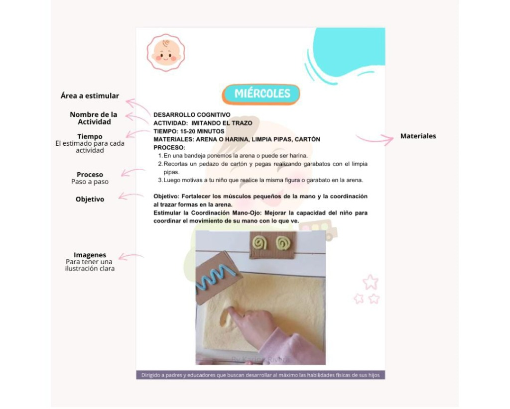
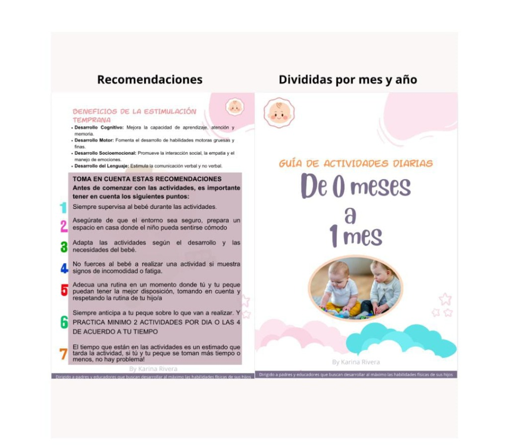
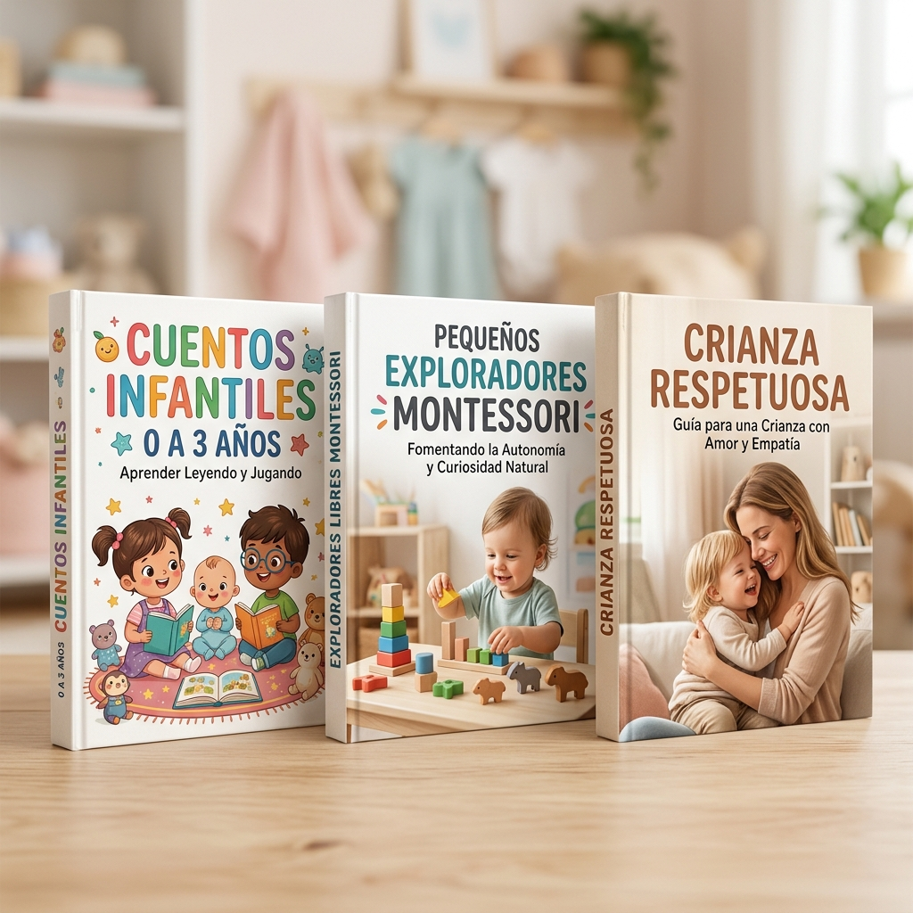
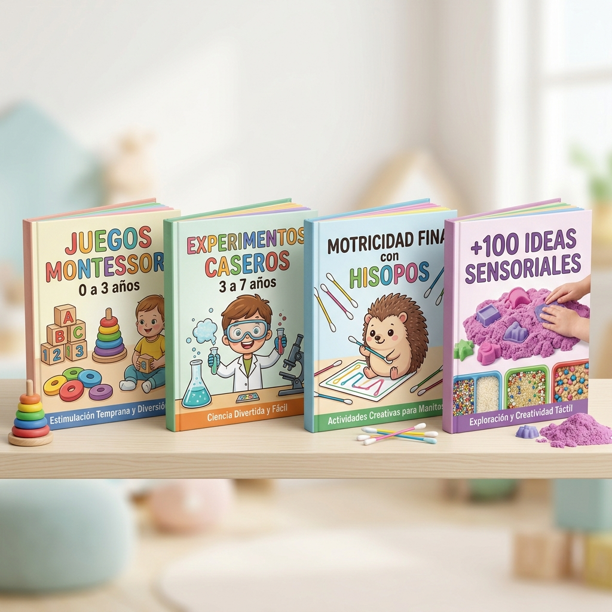
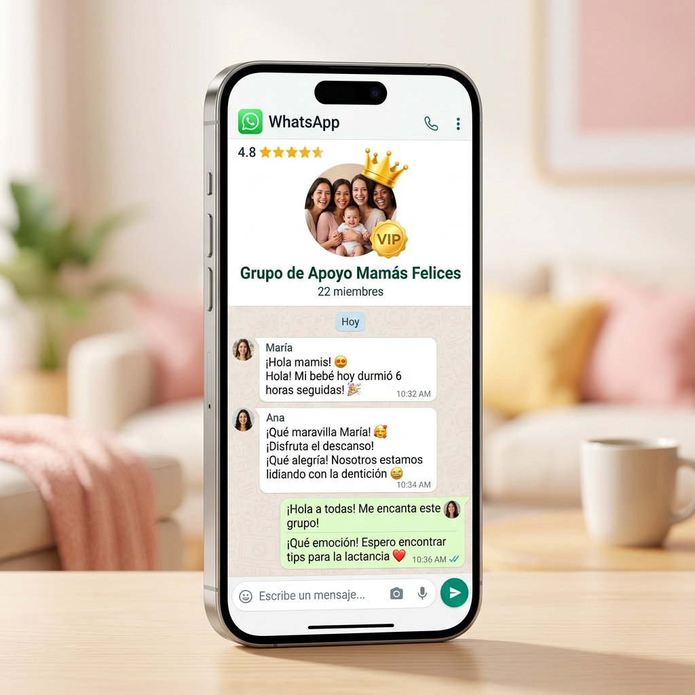
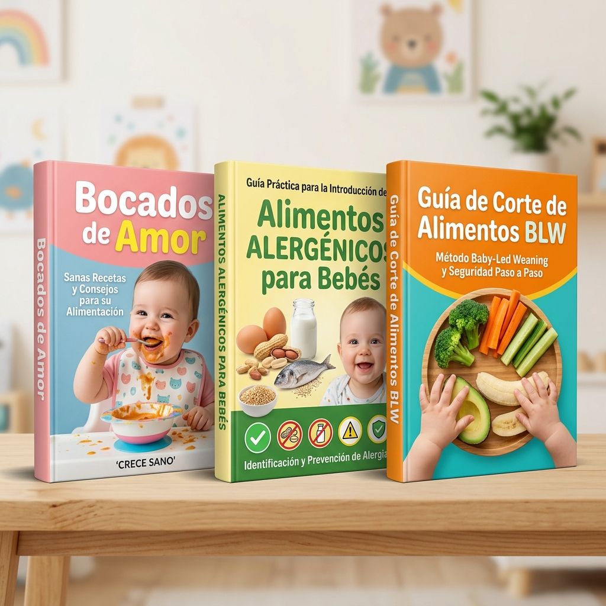

🧠
Desarrollo Cognitivo
Actividades focalizadas en la atención sostenida, memoria temprana, curiosidad investigativa y capacidad de resolución lógica.


Acompaña cada etapa de su desarrollo con más de 1.200 actividades y juegos prácticos organizados por edad, diseñados para potenciar su cerebro, lenguaje y motricidad en solo 15 minutos al día (sin pantallas ni juguetes caros).

Como madre o padre, deseas apoyar al máximo el potencial de tu pequeño. Sin embargo, entre la rutina y la avalancha de información contradictoria en redes, es normal sentirse abrumado o dudar si un juego es verdaderamente adecuado para su etapa.
.jpeg)
Haz clic en la etapa actual de tu pequeño para descubrir una muestra de lo que lograrán juntos.
Durante los primeros meses, el cerebro crea millones de conexiones neuronales por segundo. Las actividades se centran en el vínculo afectivo, la visión y la fortaleza muscular.
Ideales para realizar en sesiones cortas de 5 a 10 minutos entre tomas y siestas.
Ver Oferta CompletaTu bebé comienza a sentarse, gatear y explorar activamente su entorno con las manos. Fomentamos la causa-efecto y la autonomía.
Estimula su coordinación y curiosidad con recipientes y objetos que tienes en tu cocina.
Ver Oferta CompletaComienza la gran etapa de la marcha independiente y la explosión del lenguaje. Las actividades canalizan su energía inagotable.
Juegos para canalizar su energía física y acelerar su comprensión de palabras.
Ver Oferta CompletaTu pequeño empieza a formular oraciones, a expresar su identidad y a interactuar con mayor precisión manual y creatividad.
Estrategias prácticas para tardes divertidas y manejo respetuoso de las emociones.
Ver Oferta CompletaFomentamos el pensamiento crítico, la grafomotricidad, la iniciación numérica y la seguridad personal para su etapa escolar.
Prepara a tu hijo para el colegio con confianza, destreza y alegría por aprender.
Ver Oferta CompletaCada propuesta de juego ha sido estructurada para acompañar integralmente su crecimiento armónico.
Actividades focalizadas en la atención sostenida, memoria temprana, curiosidad investigativa y capacidad de resolución lógica.
Juegos interactivos para la discriminación auditiva, imitación de sonidos, enriquecimiento de vocabulario y expresión fluida de ideas.
Ejercicios para fortalecer el tono muscular, equilibrio corporal, coordinación ojo-mano y motricidad fina para la escritura.
Exploración multi-sensorial con texturas, temperaturas, colores y aromas que enriquecen su mapa neurológico y percepción del entorno.
Dinámicas de apego seguro, validación de emociones, fomento de la empatía, paciencia y autorregulación afectiva en familia.
Habilidades de autonomía personal, concentración, seguimiento de instrucciones sencillas y disfrute natural por el aprendizaje.
Diseñadas para que no tengas que improvisar ni leer manuales complejos. Cada página te dice exactamente qué hacer, cómo hacerlo y qué habilidad estimula.

Olvídate de buscar ideas dispersas en internet. Al abrir tu día tendrás todo organizado en un solo vistazo:
Identificas de inmediato el pilar clave que trabajarás hoy: cognitivo, lenguaje, motricidad o sensorial.
Propuestas lúdicas y atractivas (ejemplo: "Imitando el trazo") que captan la atención de tu pequeño.
Sesiones breves pensadas para la ventana natural de concentración del niño, sin sobreestimularlo.
Harina, fideos, limpia pipas, cartón, cojines... ¡elementos cotidianos que ya tienes en casa sin gastar de más!
Instrucciones sencillas y directas numeradas para que mamá, papá o cualquier cuidador lo aplique con éxito.
Sabrás exactamente qué beneficio estás construyendo: coordinación mano-ojo, motricidad fina y enfoque.
Una imagen de referencia clara para que veas cómo armar la actividad en menos de dos minutos.

Cada etapa del desarrollo tiene necesidades particulares. Nuestras guías respetan los ritmos de maduración infantil:
Pautas de seguridad, preparación del entorno y consejos para anticipar a tu pequeño antes de cada juego.
Practica de 2 a 4 actividades diarias según tu tiempo y la disposición de tu pequeño, sin estrés ni apuros.
Aprende a respetar su ritmo propio y a pausar cualquier actividad si el bebé muestra signos de fatiga.
Úsalas desde tu teléfono o tablet, o imprímelas para encuadernar tu propio libro físico de estimulación.
"No necesitas ser experta ni comprar juguetes caros. Solo necesitas 15 minutos de presencia consciente y una ruta clara que te guíe día a día."
Diseñadas específicamente para el ritmo de vida de mamás y papás ocupados.
Abre la sección correspondiente a su mes o año actual. Todo está organizado de forma intuitiva para encontrar el juego ideal en 30 segundos.
Sin gastar en juguetes sofisticados. Usa elementos seguros que tienes en la sala, cocina o habitación (cucharas, cojines, cintas, papel, cajas).
Dedica de 15 a 20 minutos de calidad al día, respeta su ritmo propio y celebra cada pequeño logro mientras fortalecen su conexión familiar.
Experiencias de padres que transformaron el tiempo en casa con sus hijos.
"Trabajo todo el día y al llegar a casa me sentía culpable por no saber a qué jugar con mi bebé de 8 meses más allá de darle juguetes con luces. Esta guía me solucionó la vida: actividades súper sencillas que lo mantienen sonriente y curioso."

"Buscaba algo para estimular el lenguaje de mi hija de 2 años porque sentía que le costaba soltarse a hablar. Con los juegos sensoriales y de imitación de la guía empezó a decir muchísimas palabras nuevas en solo tres semanas. ¡Vale cada centavo!"

"Lo mejor es que está en formato PDF imprimible. Mi esposa y yo imprimimos las fichas de 3 a 5 años y las tenemos en la sala. Hemos logrado reducir casi por completo el uso de pantallas y tablets por las tardes. 100% recomendado."

Diseñados especialmente para multiplicar el desarrollo y darte todas las herramientas listas para usar en casa desde el primer minuto: guías, actividades Montessori, cuentos y comunidad privada.

Aquí podrás registrar las actividades que realizas todos los días y llevar un control de ellas, así sabrás exactamente en qué área estimular más y los hitos clave que tu bebé debe cumplir.

Más de 100 cuentos para fomentar el amor por la lectura en tu bebé desde temprana edad.
Guía de crianza Montessori para formar niños felices, autónomos y seguros.
Aprende a acompañar a tu hijo desde el amor, apego seguro, límites claros y conexión real.

Actividades prácticas para fomentar la independencia, la concentración y el aprendizaje.
Descubre experimentos seguros y divertidos con ingredientes sencillos del hogar.
Introduce hisopos en agujeros: mejora la coordinación mano-ojo y fortalece sus dedos.
Estimula los sentidos, la creatividad y el desarrollo cognitivo con diversión garantizada.

La maternidad o paternidad no debe ser un camino lleno de dudas, soledad o miedos. Esta comunidad privada te acompaña en cada paso junto a tu bebé con contención y apoyo real.

Todo lo que necesitas para una alimentación completa, nutritiva, segura y libre de estrés.
Platos ricos y sencillos para cada etapa de tu bebé.
Cómo introducirlos paso a paso con total tranquilidad.
Cortes adecuados y seguros para prevenir atragantamientos.
Acceso de por vida a más de 1.200 actividades organizadas por edad + material complementario listo para usar en tu celular, tablet o imprimir.
Pago único · Sin suscripciones mensuales · Moneda y medios de pago locales en Hotmart.
Prueba las guías con tu pequeño. Si sientes que no es lo que esperabas, puedes solicitar el reembolso del 100% de tu dinero directamente en Hotmart sin preguntas.
Todo lo que necesitas saber antes de iniciar tu experiencia con las guías.
El acceso es inmediato. Tan pronto se confirma tu compra en Hotmart, recibes un correo electrónico con tu enlace personal de acceso directo para descargar todos los archivos PDF en tu teléfono, tablet o computador.
¡Sí, totalmente! Los archivos están formateados en alta calidad para que puedas imprimirlos por completo o imprimir únicamente las hojas de la edad que estés trabajando con tu pequeño.
Abarca de forma progresiva desde recién nacidos (0 meses) hasta los 5 años cumplidos, dividida en 5 grandes etapas para que las guías acompañen a tu hijo durante varios años de crecimiento.
No. El 95% de las propuestas están diseñadas con objetos cotidianos que ya tienes en casa: cucharas de madera, envases plásticos reciclables, harina, agua, telas, cintas, cojines y hojas.
Sí. La plataforma de pago Hotmart detecta automáticamente tu país y te mostrará el valor equivalente en tu moneda local (pesos colombianos, mexicanos, chilenos, soles peruanos, euros, etc.) junto con los métodos de pago disponibles (tarjeta de crédito, débito, PayPal o pagos en efectivo según tu país).
No tiene caducidad. Es un único pago con acceso de por vida. Podrás consultar el material cada vez que lo necesites e incluso guardarlo en tus dispositivos para verlo sin conexión a internet.
Cuentas con 7 días de garantía respaldada por Hotmart. Si durante los primeros 7 días consideras que el material no cumple tus expectativas, solicitas el reembolso con un solo clic y se te reintegra el 100% de tu dinero.
Acompaña sus primeros 5 años con más de 1.200 actividades prácticas y sin pantallas desde casa.
Valentina M. (Bogotá)
Adquirió las guías hace 4 min